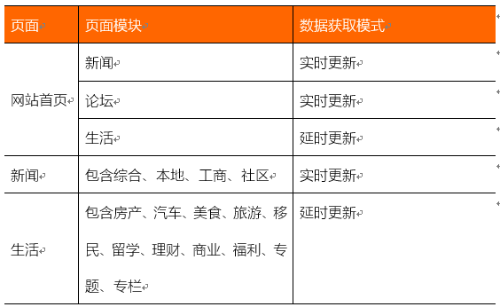

发布、编辑文章
手动操作
展示最新内容
刷新CMS结点或者更新CMS结点内容
发布、编辑文章
展示最新内容

静态发布时编辑操作流程
动态更新时的编辑操作流程
动态获取数据是指编辑发布或更新文章后，系统自动获取最新的数据并实时展示。
但在实际应用中，出于对服务器压力的考虑，并不是所有的信息都是实时展示，我们会通过缓存实现部分信息的延时更新展示。
本系统中：

动态数据获取有以下优势：
• 文章自动提取最新发布的内容，不需要编辑手动更新发布
• M版文章实现方式更换，实现响应式展示，做的一个链接，PC、移动设备展示同样内容、不同样式的目的
但也有一定的劣势，譬如以前我们的一些制作中的专题会先发布到CMS结点中，然后进行各种调整，如果是动态数据获取，这些未完成的专题或其它信息就会自动展示出来。